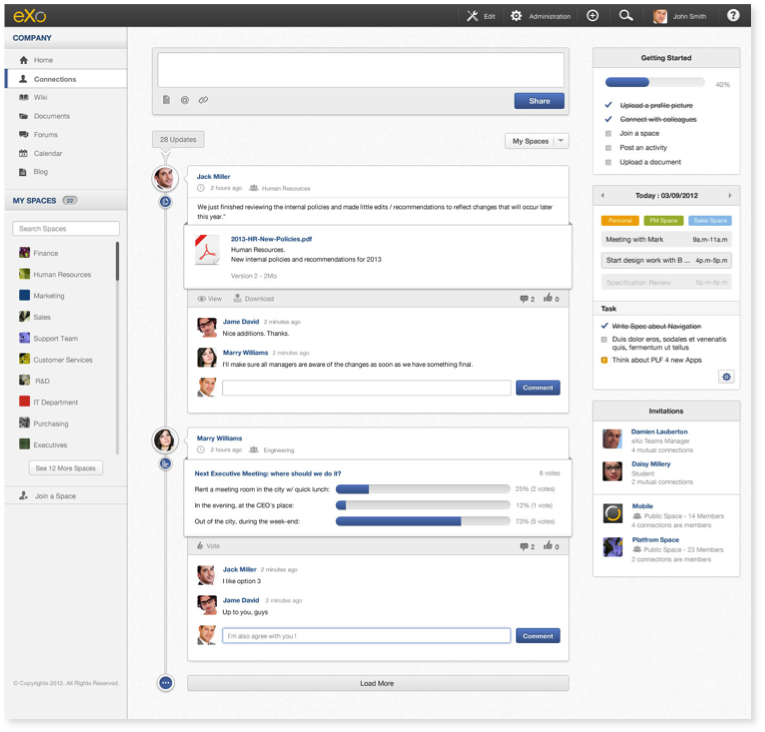
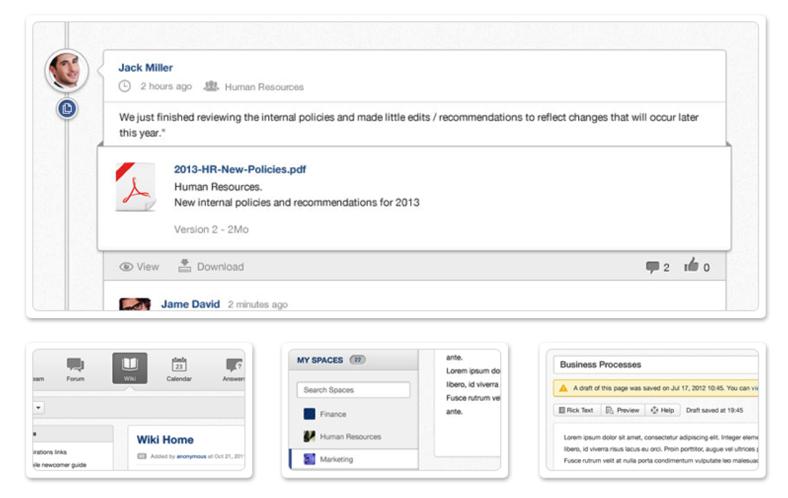
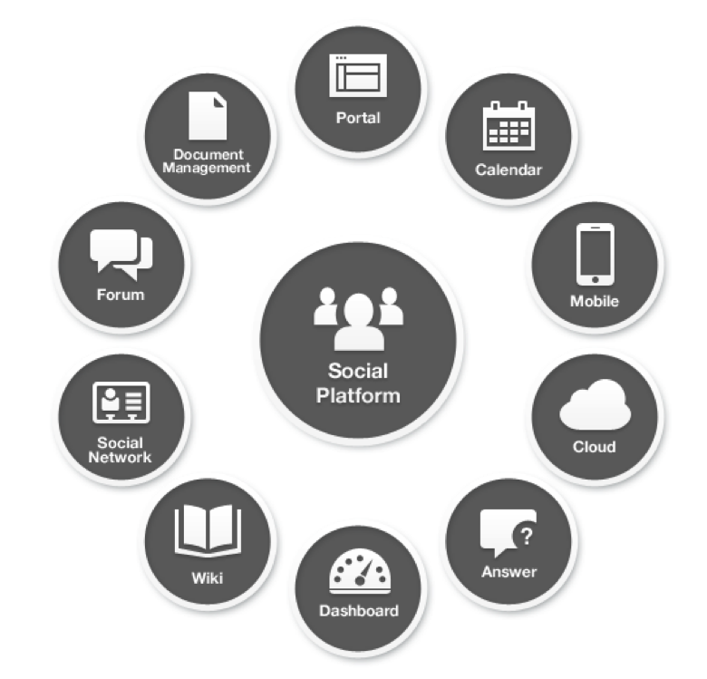
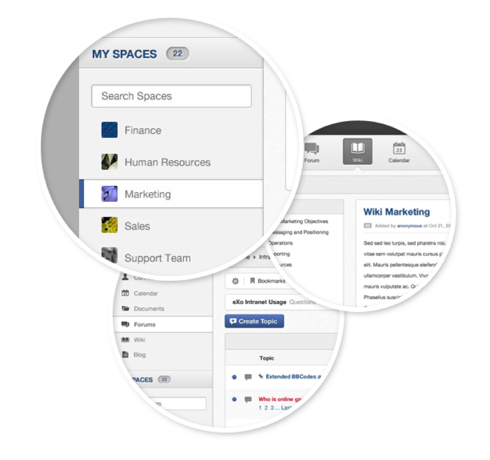

eXo Platform
The Enterprise Social Platform
eXo Platform Academy
May 2013
Company
Company
- eXo began as an open source project in 2002, as the industry's first Java portlet container. The eXo Project catalyzed a portal market dominated by a handful of very large vendors selling six-figure software and lock in. We opened the floodgates to choice in this market, and customers came.
- The eXo Project grew into a company in 2003, as a response to customer demand. That customer -- the U.S. Department of Defense -- kicked off a tradition that continues to this day: Building great software in partnership with our customers. We can do this because we release our code in the open. It's how the DoD found us, when we were just university students hacking away, and it's how we choose to do business with our customers.
- Today, eXo is a rapidly growing global company, with U.S. headquarters in San Francisco, California, global headquarters in France, and offices in Tunisia, Ukraine, and Vietnam. The company has established technology leadership and proven value by their large European installed base and strategic partnership with Red Hat.
What is eXo Platform?
- eXo Platform is an open source social collaboration software solution designed for the Enterprise.
- It is full featured, standard based, extensible and has an amazing design
Why an Enterprise Social Platform
| Social is everywhere | |
| Social is enterprise-ready | |
| Social is available |
Solution
Build a Social Intranet

Solution
Build Social Websites
Features

All in a Single Platform
Features
Social Features
- User profiles: Profiles let users personalize their avatar picture, their job title, contact details, skills and background. All profiles are searchable through a centralized directory of people.
- Connections: Build your network by connecting to other people. You can track their activity through their activity streams. New connections are suggested automatically.
- Activity Streams: Follow what your connections are sharing, such as links to documents or just moods. Follow team activities. All built-in apps are nicely integrated to update the activity streams of important things like events, changes to documents, new posts, etc...
Features
Collaborative

- Spaces: Create collaboration workspaces for teams or projects where you can share documents, tasks, events, wikis and more. Spaces can be open or closed, private or public and space administrators can manage members and the applications that are available.
- Wikis: Wikis are the most unconstrained way to create content for everybody. Build documentation, a knowledge base or procedures super easily with a powerful enterprise wiki that has templates, WYSIWYG, search, cross-linking and more.
- Forums: Bulletin boards are a classic discussion tool, which are very popular with communities. Our full-featured forum app has all you need, such as moderation, permissions, polls, notifications, locking, pruning, bans and search.
Copyright 2013 eXo Platform